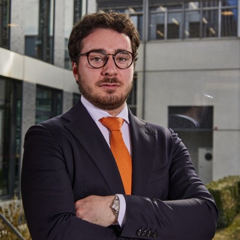

Welcome on my summary!

Let me tell you a little bit about myself,my hobbies, my inspirations as well as my goals.
My name is Alexandre but my friends call me by my nickname "Fata". I was born in Geneva in Switzerland which obvisously made me be a huge fan of Roger Federer. This guy is my biggest inspiration but I'm gonna tell you more about it later. Speaking of which, tennis is one of my favorite hobby that I share with wine too.
If you want to know more about my professional background, click on the link below
Let me now tell you about my two passions!
Tennis 🎾
I have been playing tennis since the age of 10y/o. Since the first day I picked up a racket, I've fallen in love with this sport, which is both beautiful and frustrating. Wining a match fulffil me with joy but not being able to play as good as usually is truly the most frustrating feeling, every tennis player can attest that. This sport has allowed me to travel and discover incredible tennis clubs all around the globe as well as meeting incredible people. I love knowing that I'm responsible for everything I do, and that I can only blame myself if I lose.
Wine 🍷
I really started getting interested in the world of wine a few years ago. What I like about wine is that I never stop learing, is it almost impossible to know everything about it. I love discovering new varieties of wine, new wine regions and I find that wine is the perfect addition to an evening with friends and a good dinner.
My biggest inspiration!
My biggest inspiration is Roger Federer. I admire him both tennis-wise and professionally. His game is and will never be immitated. He is an example of class and game intelligence for all of us who are interested in tennis. Off the court, he is also one of my greatest inspirations. They way he managed his various activities while maintaining the positive image he's been conveying for almost 25 years is truly inspirationnal.
My goals!
Appart from tennis and wine, I'm passionated by Real Estate and woudl like to do a career out of it. After having done an internship in a real estate company, it reinforce my choice. After EHL I'm gonna work in the same company I did my internship in then I'd like to gain some experience in the developement field.
Feel free to follow me on my different social networks!
Or if you are a music lover, check out my playlists on spotify!